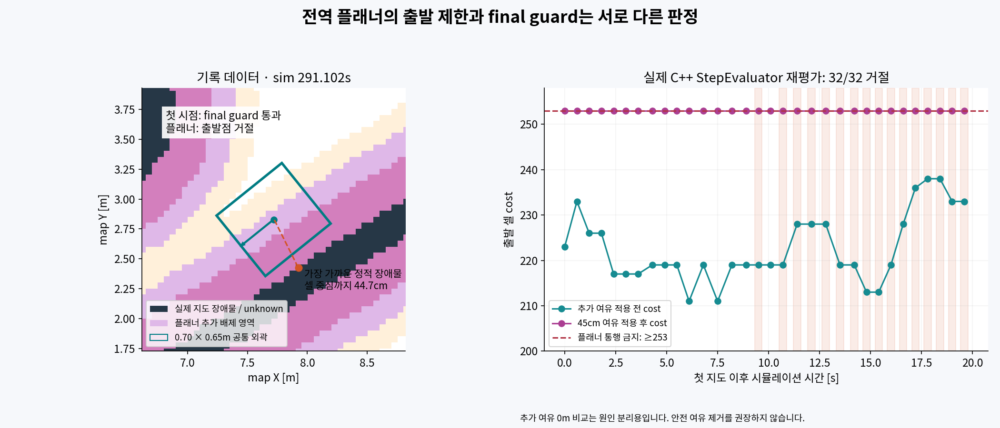
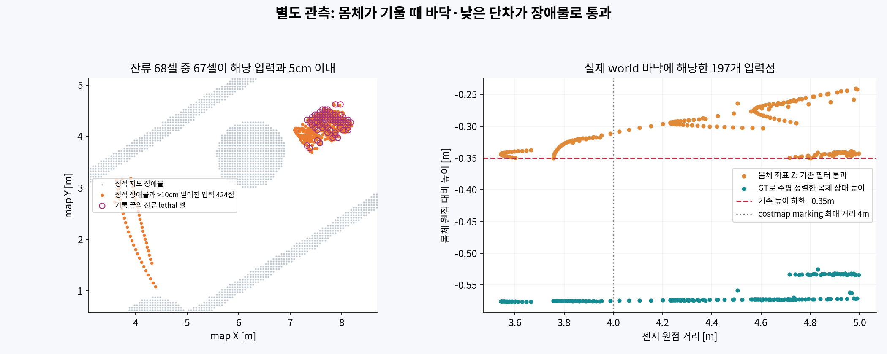

2026-10-20 · ROS_DOMAIN_ID=45 · Gazebo / FAST-LIO / Nav2 DWB · 사용자 요청에 따른 현장 진단
이미 지정된 목표를 바꾸지 않고 /unpause_physics를 호출해 24초간 기록했다. 시뮬레이션 시간은 약 20.5초 진행했다. 이후 /pause_physics의 완료 응답을 확인했다. 새 목표나 /cmd_vel을 발행하지 않았고 운영 코드·파라미터·지도 파일은 수정하지 않았다. 최종 상태는 Gazebo 일시정지다.
| 관측 항목 | 결과 |
|---|---|
| 센서·TF·costmap | 점군 206개, global/local costmap 각 32개 기록 |
| 목표 상태 | 기존 마지막 NavigateToPose 목표 ABORTED. 현재 활성 목표 없음 |
| DWB / collision monitor 출력 | /legged/cmd_raw, /legged/cmd_safe 수신 0개 |
| 최종 출력 | /cmd_vel 530개 기록. 관찰 구간 명령은 0. 주된 사유 safe_command_timeout |
| 직전 planner 로그 | grid start invalid 반복, BT 재시도 한도 이후 목표 종료 |
따라서 이번 기록에서 “DWB가 전진 명령을 냈는데 guard가 잘랐다”는 현상은 관측되지 않았다. 이미 종료된 목표로 재생했기 때문에 아래 검사는 기록 자료를 이용한 오프라인 원인 재현이다. 최초 오류 발생 순간 자체를 기록한 것은 아니다.
플래너는 lethal/unknown 셀 주변에 0.45 + √2 × 0.05 ≈ 0.521m의 셀 중심 간 배제 범위를 적용한다. 여기서 0.521m는 물리 표면과 로봇 외곽 사이 여유가 아니라, 격자 면적을 보수적으로 고려한 장애물 셀 중심과 후보 셀 중심의 거리다. 이 내부 지도는 RViz costmap에 그대로 표시되지 않는다.

| 동일한 기록 32개로 비교 | 결과 |
|---|---|
| 추가 clearance 전 | 출발 셀 원래 cost 211~238. 실제 StepEvaluator에서 32/32 유효. 높이 관측 근거도 유효 |
| 현재 0.45m clearance 적용 후 | 32/32 cost=253, 이유 costmap_collision |
| 첫 시점 final guard 재평가 | 정지·전진 0.1m/s·후진 0.1m/s·좌우 회전 0.2rad/s 모두 pass. 1초 일정 속도 예측. 실제 주행 명령은 보내지 않음 |
| 전체 시점 final guard 정지 외곽 검사 | 16/32 pass, 16/32 costmap_collision. 이후 자세 변화 구간은 guard도 충돌로 평가 |
| 가장 가까운 장애물 | 32개 지도 모두 기존 정적 지도 장애물과 일치. 새 잔류 셀만 지워서 이 문제를 해결할 수 없음 |
두 판정은 서로의 도형을 직접 충돌시키지 않는다. DWB와 guard는 0.70×0.65m 외곽을 기준으로 검사하고, 전역 플래너는 추가 원형 배제 영역으로 로봇 중심을 검사한다. 첫 시점처럼 guard는 움직일 여지가 있는데 플래너는 출발점부터 거절하는 불일치가 생긴다. 후반에는 실제 guard도 현재 외곽과 지도 셀의 겹침을 검출했으므로 모든 시점이 안전하다고 볼 수는 없다.
원인 분리 실험에서 clearance를 0으로 평가했지만, 이를 운영 설정으로 적용하지 않았다. 격자 A* 경로에는 로봇 방향이 포함되지 않아 clearance만 없애면 모서리를 스치는 경로를 만들 수 있다.
앞선 26.3초 시뮬레이션 기록에서 264개 점군·약 150만 점을 분석했다. 필터는 고정 장착 TF만 사용해 몸체 좌표 Z가 −0.35~1.5m인 점을 통과시킨다. 보행 중 roll/pitch가 변하면 이 높이 구간도 몸체와 함께 기울어져 먼 바닥이나 낮은 단차를 받아들인다.

| 측정 | 결과 |
|---|---|
| GT world 바닥에 해당한 필터 출력 | 197개. 그중 53개가 costmap marking 거리 4m 안쪽 |
| 정적 장애물에서 10cm 넘게 떨어진 marking 후보 | 424개: 바닥 53개, 15cm 단차 범위 368개, 단차 경계 바깥 3개 |
| 잔류 지도 셀과 대응 | 끝 시점 잔류 lethal 셀 68개 중 67개가 위 후보점에서 5cm 이내 |
| 바닥이 유입된 대표 자세 | roll −3.45°, pitch −1.71°, 센서 거리 약 3.54m부터 바닥 점 통과 |
| 전역 Z +25cm 비교 | 센서와 점을 함께 이동하면 약 150만 점의 marking 판정 변화 0개, XY 셀 변화 0개 |
| GT 중력 방향으로 수평 정렬한 상대 높이 비교 | 위 424점 모두 −0.35m 하한 아래로 떨어져 제외됨. GT는 원인 분석용으로만 사용 |
현재처럼 costmap 절대 Z 조건을 넓게 열고 몸체 기준에서 먼저 필터링하면, 순수한 전역 Z 평행이동은 그 선별에 영향을 주지 않는다. 반면 자세 오차·실제 몸체 기울기·XY 정합 오차·시각 불일치는 별도 영향을 줄 수 있다. 초기 SE(3) 정렬 후 이 기록의 LIO 상대 Z 변화 오차는 약 −2.1~+2.0cm였으며, 이 수치는 초기 절대 오차가 없다는 뜻이 아니다.
흔적이 주행하면서 지워지는 것은 ray clearing과 부합한다. observation_persistence: 0은 지도에 찍힌 셀을 매 프레임 자동 삭제한다는 뜻이 아니다. 현재 필터 통과점만 clearing에도 쓰기 때문에 재관측 조건에 따라 흔적이 남을 수 있다.
Nav2 Humble ObstacleLayer · ObservationBuffer.
이 단계에서는 진단만 완료했다. 운영 코드와 파라미터는 유지했으며, full-path 재계획·좁은 통로 통과·하드웨어 적용 검증은 아직 수행하지 않았다.
재생/정지 서비스 완료 기록 · 지도·자세·guard 검사 · 실제 플래너 노드 평가 결과 · C++ 평가기 · 점군 진단 · world 표면 분류 · 수평 정렬 비교
주의: costmap 셀 중심 거리와 로봇 실물 표면 간 거리는 다르다. 오프라인 짧은 guard 검사 통과는 주행 정책의 제동 성능이나 전체 경로 안전을 입증하지 않는다. 이전 보고서의 “그 기록에서는 바닥 증거 없음”은 해당 구간의 결과였으며, 이번 더 긴 기록에서 유입 순간을 확인했다.